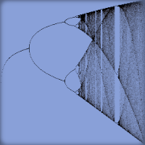

Sistemas Caóticos
Jaime Villate. Faculdade de Engenharia. Universidade do Porto
Início
→
Disciplinas
→
L.EI008
→
Dinâmica e Sistemas Dinâmicos
→
Sistemas Caóticos
Curvas de evolução
Pontos de equilíbrio
Ciclos
Ciclos limite
Órbitas homoclínicas ou heteroclínicas
Atratores estranhos
Atrator de Lorenz
Atrator de Chen e Ueta
Pêndulo duplo
Sistemas dinâmicos discretos
O Mapa Logístico